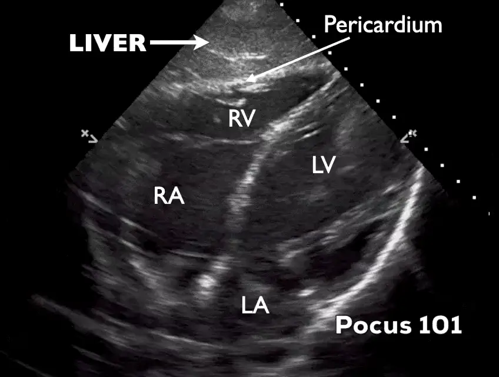

POCUS Tips › Cardiac
Subcostal Four-ChamberSUBC
The rescue window: best single view for pericardial fluid, and the view that still works in arrest and trauma.
Open the interactive view with the loop and quiz →
Where to put the probe
- Window
- Just below the xiphoid, using the liver as an acoustic window
- Marker
- Patient’s LEFT (~3 o’clock), probe flattened toward the left shoulder
- probe
- phased array
- preset
- cardiac
- depth
- 20–24 cm
Get the view
- Knees bent and abdomen relaxed. A held deep breath pulls the heart down toward the probe.
- Start just right of the xiphoid so the liver sits between the probe and the heart.
- Flatten the probe almost against the skin, aiming at the left shoulder — beginners hold it far too upright.
- Set depth first, then press with the heel of the probe and fan until all four chambers appear with the RV nearest you.
What you are looking at
- Liver
- Your window — homogeneous gray tissue in the near field.
- Pericardium
- The bright line where liver meets heart; fluid appears as black between the layers.
- Right ventricle
- Closest chamber. First to collapse when pericardial pressure rises.
- Left ventricle
- Deeper and to screen right in this orientation.
- Right atrium
- Diastolic collapse here is an early tamponade sign.
- Left atrium
- Deepest chamber; often the hardest to see well.
Numbers that matter
| Finding | Threshold | What it means |
|---|---|---|
| Effusion sizelargest diastolic separation | < 1 cm small | 1–2 cm moderate, > 2 cm large — but tamponade is physiology, not size |
| Chamber collapsewatch RA and RV through diastole | none | diastolic RA or RV collapse — tamponade physiology |
| Septal bounce / respirophasic shiftwatch several cycles | absent | present alongside an effusion supports tamponade |
| Pulse-check scan timeduring CPR pauses | ≤ 10 s | longer pauses cost perfusion — pre-place the probe before stopping compressions |
Don’t be fooled — pitfalls
- Fat pad, againAn anterior echogenic layer that moves with the heart. Circumferential black fluid is an effusion; a bright anterior stripe usually is not.
- Gastric gas wipes out the viewSlide right and angle back through more liver rather than pushing harder through the stomach.
- Left pleural effusion mimicking pericardial fluidTrack the fluid’s relationship to the heart and diaphragm; pleural fluid does not surround the heart.
- Hemopericardium can look like tissueFresh clot is echogenic and can hide an effusion in trauma. Look for chamber collapse and IVC plethora, not just black space.
Bad image? Fix it
- Only liver on screenIncrease depth before you change angle — the heart is usually deeper than expected, not somewhere else.
- Probe feels like it is pointing nowhereFlatten it further. Subcostal is close to parallel with the abdominal wall, not perpendicular.
- Tense or obese abdomenBend the knees, ask for a deep inspiration and hold, and lean into the heel of the probe with steady pressure.
- Near field is bright, heart is darkDrop near-field gain (TGC) and raise far-field gain, or switch to a lower frequency.
So what — what the finding changes
- Effusion + hypotensionTamponade pathway — fluids as a bridge, prepare pericardiocentesis, call cardiology or surgery now.
- Cardiac standstill in arrestFeed it into the team’s prognostic discussion; document what you saw and when.
- Clean subcostal in undifferentiated shockMove on deliberately: lungs, then IVC, then abdomen and aorta.
Educational use only. Not for diagnosis or treatment decisions — confirm findings with formal imaging and your own judgment. By Yonathan Daniel, MD · About · Last reviewed 2026-09-15.